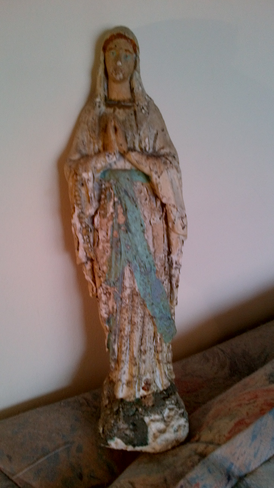

Thursday, August the 23rd, 2012
back to: title, date or indexes
We are never averse to a spot of unbridled Roman Catholic Mariolatry here at Hooting Yard, so here is a snap of the BVM. The provenance of this statue? Throughout my childhood, she stood in our back garden, in the shelter of a grotto, what you heathens would probably call a rockery. Truly it was like growing up in Lourdes, or the Essex council estate equivalent thereof. She later spent many years watching over my father's grave in Ansdell Cemetery in Lancashire. Weatherbeaten and distressed, she returned south late in the last century, and has since resided safely indoors with Mr Key.
